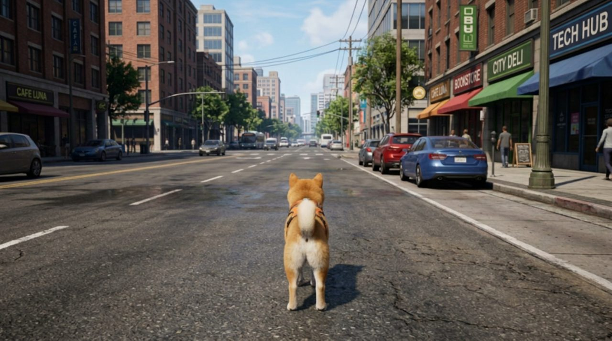
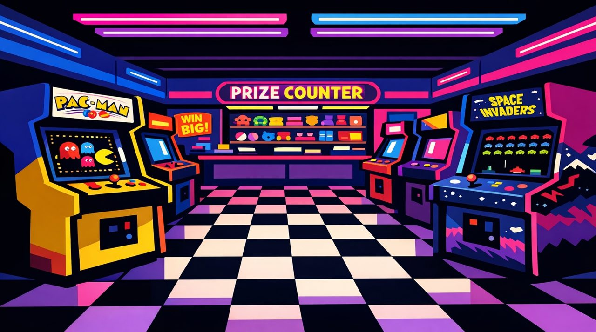
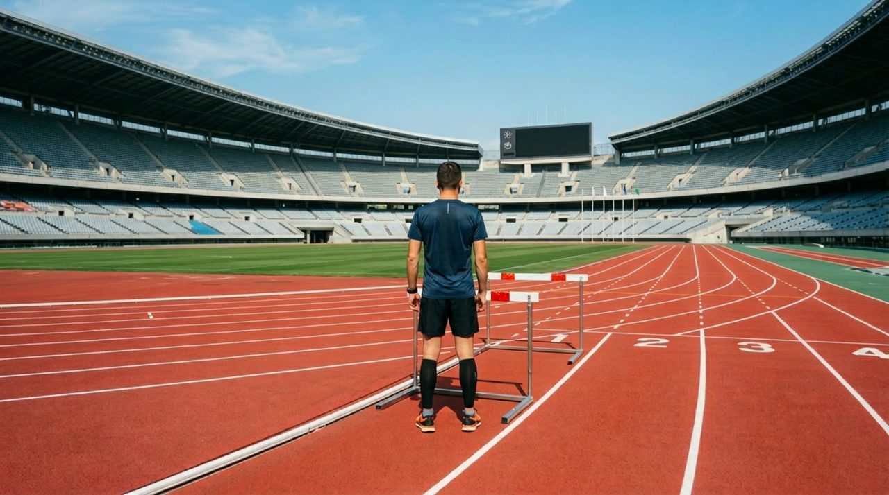
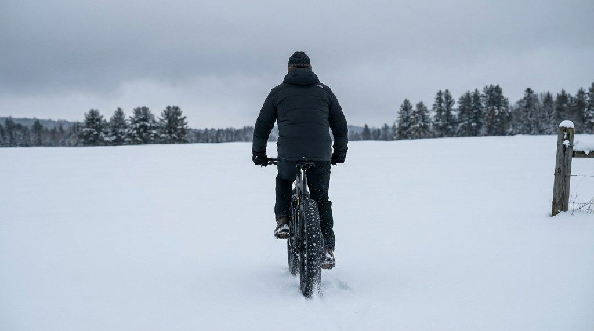
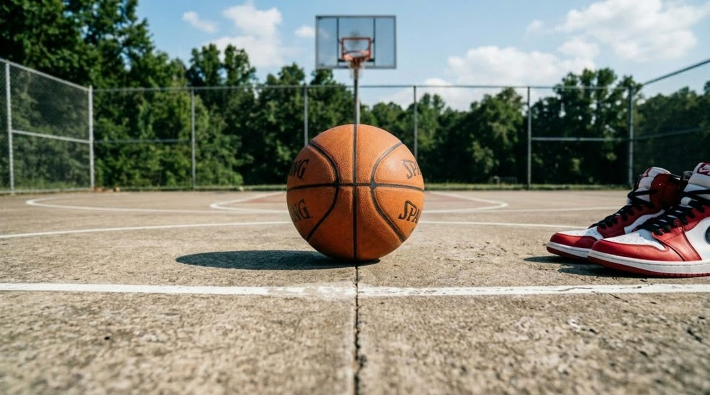
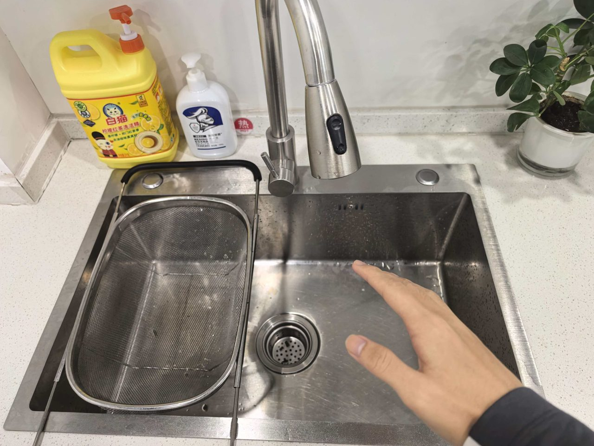
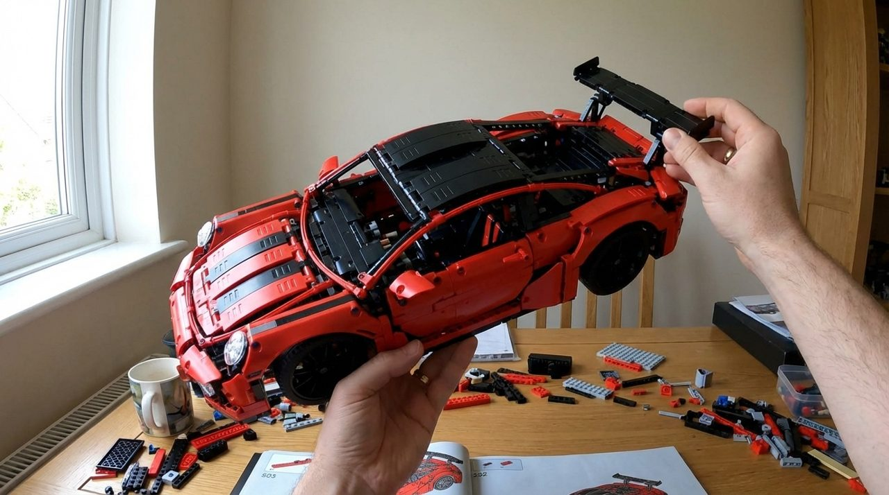
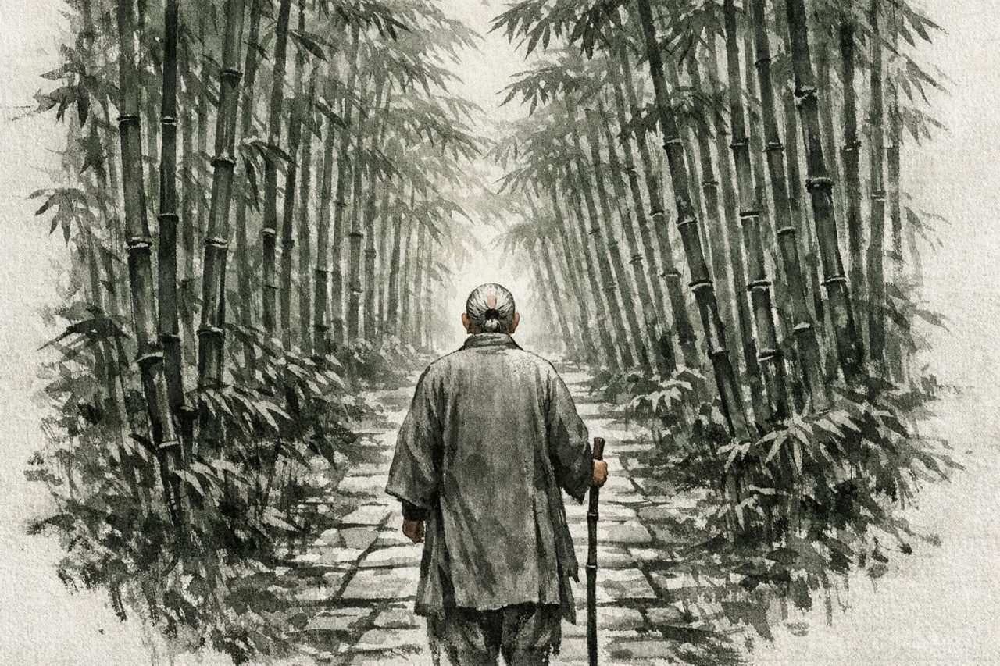
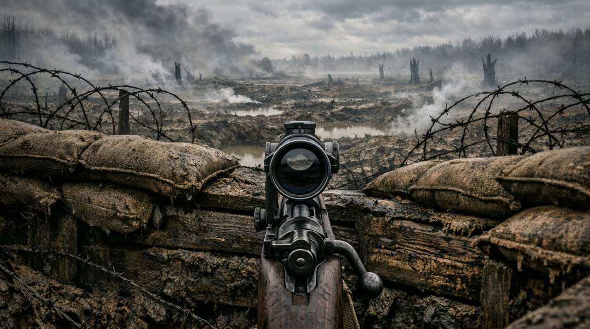
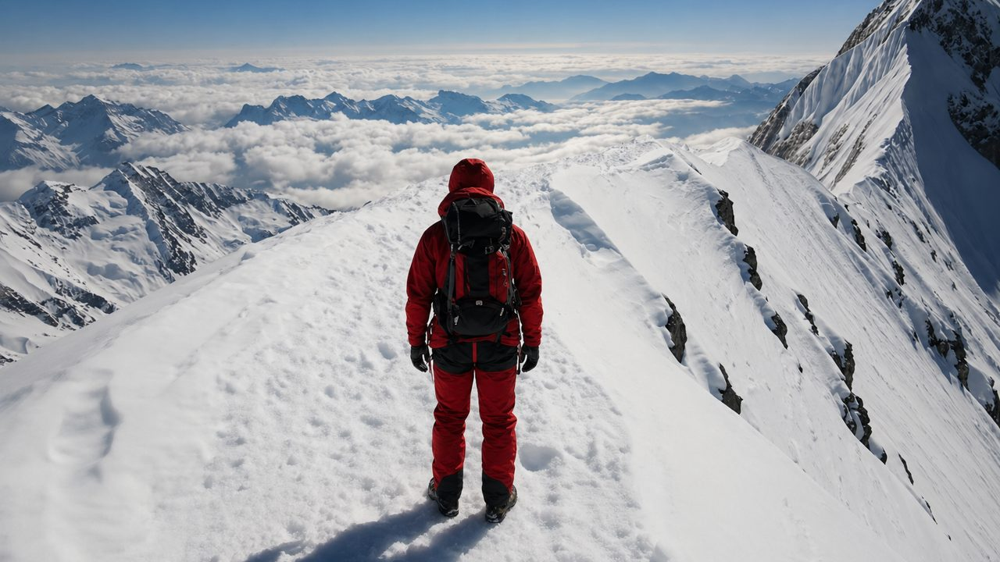

WBench 怎么打榜？白模世界能不能一起上？
WBench 是美团 LongCat 和复旦做的「交互式视频世界模型」评测，Zing-0.5 的 81.0 分就是在这儿拿的。榜单数据取自 官网（2026/10/04 更新）。
给模型一张起始图 + 一串操作（往前走、左转、让角色做动作……），看它生成的视频好不好看、听不听话、前后一不一致、物理合不合理。289 题，全自动打分。
自己生成视频 → 跑开源评测（或让官方帮跑）→ 视频放网盘、发邮件给作者。不用交权重、不用开 API，免费，人工审核。
不行。题目是固定的，参赛的只能是模型。白模世界能当训练数据、内部模拟考，或拿去找作者提议新赛道。
Navigation（按键走得准）和空间一致性（转一圈回来场景还在）。风险：画质和贴合文字描述，白模画面偏素可能拖分。
跳到：全部榜单一览 · 题目示例（17 道原题）
Zing-0.5 在哪
Navi 榜（158 个导航题）第 6 名：总分 81.0，一致性 88.5。第 1 名 Alaya-EVOKE-Turbo 82.0，前 10 名分差只有 2.1 分。
全部榜单一览
数据来源：官网榜单（2026/10/04 更新）、HuggingFace 官方数据集的 289 个题目 JSON（逐个统计）、论文附录。前三名直接从官网表格里取，分数相同时按官网表格顺序列出。
一、官网上能看到的排行榜（真正有排名的只有这些）
官网榜单有 3 个筛选开关：分榜（Navi 158 题 / Full 289 题）× 模型类型（全部 / 文字 / 相机 / 按键）× 显示方式（5 个维度 / 全部小指标），每一列都能点击排序。所以「子榜」本质上是：2 个分榜 × 4 种类型 × 每一列。HuggingFace 上官方只注册了两个评测任务：wbench_navi 和 wbench_full。
| 榜 | 测什么 | 题数 | 谁能参加 | 指标 | 当前前三（官网） |
|---|---|---|---|---|---|
| Navi 总榜 | 只考导航：按 W/A/S/D/方向键走，看走得准不准，加上画质、贴合、一致性、物理 | 158 题（只要有一个导航按键就算） | 文字/相机/按键都能参加（现 42 个模型） | 5 个维度等权平均，19 个小指标 | Alaya-EVOKE-Turbo（3-step） 82.0；XGEN-Jing（bidirection） 81.9；Enuma（bidirection） 81.7 |
| Navi · 只看文字控制 | 同上，只比同一类模型 | 158 | 文字控制模型（12 个） | 同上 | Kling 3.0 79.0；Wan 2.7 78.1；HY-Video 1.5 77.9 |
| Navi · 只看相机控制 | 同上，只比同一类模型 | 158 | 相机控制模型（20 个） | 同上 | Alaya-EVOKE-Turbo（3-step） 82.0；XGEN-Jing（bidirection） 81.9；Enuma（bidirection） 81.7 |
| Navi · 只看按键控制 | 同上，只比同一类模型 | 158 | 按键控制模型（10 个） | 同上 | JoyAI-Echo-1.5 (WM)（bidirection） 81.6；JoyAI-Echo-1.5 (WM)（flash 4-step） 81.0；Zing-0.5（4-step 5B realtime） 81.0 |
| Full 总榜 | 全部 4 种交互：导航 + 角色动作 + 事件编辑 + 视角切换 | 289 题（1,058 轮） | 官方说明写只有文字控制模型；但现在榜上有 3 个相机模型（XGEN-Jing ×2、Astronex-World）（共 16 个） | 5 个维度等权平均，22 个小指标 | Murea-Pro 81.1；XGEN-Jing（bidirection） 81.0；XGEN-Jing（4-step AR） 79.9 |
| Full · 只看文字控制 | 同上 | 289 | 文字控制模型（13 个） | 同上 | Murea-Pro 81.1；Kling 3.0 79.4；Wan 2.7 78.4 |
| Full · 只看相机控制 | 同上 | 289 | 相机控制模型（3 个） | 同上 | XGEN-Jing（bidirection） 81.0；XGEN-Jing（4-step AR） 79.9；Astronex-World（5B） 70.0 |
| Full · 只看按键控制 | — | 289 | 按键模型（0 个） | — | 官网这一栏没有模型 |
二、按维度排（点官网的列名排序）
| 维度 | 测什么 | Navi 前三 | Full 前三 |
|---|---|---|---|
| 画质 Quality | 好不好看、闪不闪、动得顺不顺 | Enuma（bidirection） 83.6；Alaya-EVOKE（3-step） 82.8；Enuma（AR 4-step flash） 82.8 | Seedance 1.5 81.9；Wan 2.7 81.0；XGEN-Jing（bidirection） 80.9 |
| 设定贴合 Setting | 画面是不是题目描述的场景和角色 | XGEN-Jing（4-step AR） 91.6；Cosmos3-Super 91.6；Wan 2.7 91.4 | Wan 2.7 91.4；Kling 3.0 91.0；Cosmos3-Super 89.4 |
| 交互 Interaction | 让它走/做动作/变环境/切视角，做到没有 | JoyAI-Echo-1.5 (WM)（flash 4-step） 87.9；HY-World 1.5（ar-distill） 86.8；JoyAI-Echo-1.5 (WM)（bidirection） 86.6 | Murea-Pro 82.6；XGEN-Jing（4-step AR） 79.5；XGEN-Jing（bidirection） 76.7 |
| 一致性 Consistency | 前后是不是同一个世界，转一圈回来还在不在 | LingBot-World（base-camera） 89.9；JoyAI-Echo-1.5 (WM)（bidirection） 89.8；AlayaWorld 89.5 | HY-Video 1.5 87.5；LongCat-Video 86.6；Cosmos 2.5 86.3 |
| 物理 Physical | 看起来物理合不合理、因果对不对 | Helios（Distilled） 76.2；Alaya-EVOKE-Turbo（3-step） 74.0；Zing-0.5（4-step 5B realtime） 73.8 | Helios（Distilled） 76.1；Murea-Pro 74.4；XGEN-Jing（bidirection） 73.3 |
三、按小指标排（官网「All Metrics」视图，Navi 19 列 / Full 22 列）
| 小指标 | 测什么 | Navi 前三 | Full 前三 |
|---|---|---|---|
| 美学（Aesth） | 美学打分器打分（每秒取 2 帧） | LingBot-World（base-camera） 66.9；LongCat-Video 66.5；Enuma（bidirection） 66.2 | LongCat-Video 64.7；HY-Video 1.5 61.9；XGEN-Jing（bidirection） 61.8 |
| 成像质量（Imag） | 技术画质（模糊、噪点） | XGEN-Jing（4-step AR） 70.7；MatrixGame3 70.0；XGEN-Jing（bidirection） 69.8 | XGEN-Jing（4-step AR） 70.5；Seedance 1.5 69.8；LongCat-Video 69.8 |
| 闪烁（Flick） | 帧间亮度稳不稳 | Astronex-World（5B） 96.3；ABot-World 96.0；InSpatio-World 96.0 | Astronex-World（5B） 96.6；Kairos 3.0 96.3；Cosmos 2.5 96.0 |
| 动态程度（Dyn） | 光流算画面动得多不多 | Wan 2.7 100.0；Seedance 1.5 99.4；XGEN-Jing（bidirection） 98.7 | Wan 2.7 99.3；Seedance 1.5 98.3；LTX 2.3 94.4 |
| 流畅度（Smooth） | 动作是否连贯 | InSpatio-World 98.8；HY-Video 1.5 98.7；Astronex-World（5B） 98.4 | HY-Video 1.5 98.8；Astronex-World（5B） 98.5；Cosmos 2.5 98.3 |
| HPSv3 人类偏好（HPSv3） | 人类偏好打分模型 | LingBot-World（base-camera） 81.4；Enuma（bidirection） 80.4；LongCat-Video 77.6 | LongCat-Video 76.3；Seedance 1.5 72.9；Cosmos3-Super 71.2 |
| 场景贴合（Scene） | 大模型判：场景元素是否保持、画外描述的东西转过去后是否出现 | Kling 3.0 89.0；Wan 2.7 88.3；Cosmos3-Super 87.4 | Kling 3.0 89.0；Wan 2.7 88.3；Cosmos3-Super 87.4 |
| 主体贴合（Subj） | 大模型判：主体外观和动作是否符合描述 | XGEN-Jing（4-step AR） 96.6；Cosmos3-Super 95.8；Enuma（bidirection） 95.0 | Wan 2.7 94.6；Seedance 1.5 94.2；Cosmos 2.5 94.2 |
| 导航轨迹 NavScore（Navi） | 从视频反推相机轨迹，和按键对应的标准轨迹比 | JoyAI-Echo-1.5 (WM)（flash 4-step） 87.9；HY-World 1.5（ar-distill） 86.8；JoyAI-Echo-1.5 (WM)（bidirection） 86.6 | XGEN-Jing（4-step AR） 78.7；XGEN-Jing（bidirection） 75.6；YUME 1.5 72.0 |
| 事件编辑（EE） | 大模型对每轮问 5 个是/否问题：环境变化发生没、做完没、细节对不对、有没有乱冒东西 | （Navi 不算这项） | Murea-Pro 90.9；XGEN-Jing（4-step AR） 85.6；Wan 2.7 84.0 |
| 角色动作（SA） | 大模型对每轮问 5 个是/否问题：角色动了没、做完没、细节对不对、动作是否不自然 | （Navi 不算这项） | Murea-Pro 87.0；XGEN-Jing（bidirection） 86.3；Kling 3.0 85.6 |
| 视角切换（PS） | 大模型问 3 个问题，全对才得分：看得出切换吗、切到目标视角了吗、新视角构图对吗 | （Navi 不算这项） | Murea-Pro 80.7；XGEN-Jing（4-step AR） 69.4；XGEN-Jing（bidirection） 61.3 |
| 背景一致（BgCon） | 背景区域前后像不像 | LingBot-World（base-camera） 96.9；LongCat-Video 95.1；InSpatio-World 95.0 | LongCat-Video 94.7；Kling 3.0 92.7；HY-Video 1.5 92.4 |
| 空间一致（Spat） | 走一圈回到起点时，和第一帧像不像 | InSpatio-World 93.8；LingBot-World（base-camera） 92.7；JoyAI-Echo-1.5 (WM)（bidirection） 90.7 | XGEN-Jing（bidirection） 87.4；LongCat-Video 83.3；HY-Video 1.5 79.2 |
| 门控空间一致（GSp） | 同上，但画面几乎不动的扣分（防止静止刷分） | XGEN-Jing（bidirection） 87.2；Lyra 2.0（4-step AR） 86.3；HY-World 1.5（ar-distill） 84.9 | XGEN-Jing（bidirection） 87.2；XGEN-Jing（4-step AR） 77.8；Astronex-World（5B） 76.0 |
| 视角一致（Persp） | 主体在画面里的位置稳不稳 | LingBot-World（base-camera） 90.9；HY-Video 1.5 86.6；AlayaWorld 86.6 | HY-Video 1.5 86.6；Cosmos 2.5 84.3；LongCat-Video 81.5 |
| 片段连续（Seg） | 有没有突然跳镜头 | Alaya-EVOKE-Turbo（3-step） 100.0；Alaya-EVOKE（3-step） 100.0；HelixWorld（4-step AR） 100.0 | HY-Video 1.5 99.3；YUME 1.5 99.3；LongCat-Video 98.6 |
| 几何一致（Geo） | 深度重投影误差 | InSpatio-World 97.3；Cosmos3-Super 95.5；LingBot-World（base-camera） 95.4 | Cosmos3-Super 95.3；Cosmos3-Nano 95.1；LongCat-Video 94.7 |
| 光度一致（Photo） | 像素重投影误差 | Astra 87.5；InSpatio-World 87.4；Infinite-World 85.1 | Cosmos3-Nano 85.1；Cosmos3-Super 84.3；YUME 1.5 84.1 |
| 主体一致（SubjC） | 主体前后像不像 | InSpatio-World 94.4；LingBot-World（base-camera） 93.5；AlayaWorld 93.4 | LongCat-Video 92.4；Cosmos 2.5 91.8；HY-Video 1.5 91.5 |
| 视觉合理性（VPlaus） | 专门微调的 Qwen3-VL 打分：整体看着真不真 | LingBot-World（base-camera） 64.8；InSpatio-World 63.1；Enuma（bidirection） 62.5 | Cosmos3-Super 61.2；XGEN-Jing（bidirection） 61.1；LongCat-Video 60.8 |
| 因果正确性（CFid） | 大模型按 0–3 分判物理因果（50 道题还会按指定的物理类别细评） | Helios（Distilled） 94.4；Zing-0.5（4-step 5B realtime） 86.7；Alaya-EVOKE-Turbo（3-step） 86.1 | Helios（Distilled） 94.4；Murea-Pro 88.7；XGEN-Jing（bidirection） 85.6 |
四、题库里的全部题型和分类（官网没有单独排名的，标「无单独榜」）
下面数字是我把 HuggingFace 上 289 个题目 JSON 逐个统计出来的。
| 分类 | 测什么 | 题数 / 轮数 | 谁能做 | 用到的指标 | 有没有排名 / 前三 |
|---|---|---|---|---|---|
| 导航 navigation | 按 W/A/S/D、方向键（及组合键）移动或转视角 | 158 题 / 601 轮 | 文字/相机/按键 | 导航轨迹 NavScore；绕圈类题还算空间一致 | Navi 榜「导航轨迹」列：JoyAI-Echo-1.5 (WM)（flash 4-step） 87.9；HY-World 1.5（ar-distill） 86.8；JoyAI-Echo-1.5 (WM)（bidirection） 86.6 |
| 角色动作 subject action | 让角色做一个动作（开龙头、跳、挥剑…） | 76 题 / 213 轮 | 只有文字控制 | 角色动作 SA | Full 榜 SA 列：Murea-Pro 87.0；XGEN-Jing（bidirection） 86.3；Kling 3.0 85.6 |
| 事件编辑 event edit | 让环境发生变化（下雨、野马出现、爆炸…） | 65 题 / 183 轮 | 只有文字控制 | 事件编辑 EE | Full 榜 EE 列：Murea-Pro 90.9；XGEN-Jing（4-step AR） 85.6；Wan 2.7 84.0 |
| 视角切换 perspective switch | 第一人称 ↔ 第三人称、进出瞄准镜、换跟拍对象 | 31 题 / 61 轮 | 只有文字控制 | 视角切换 PS | Full 榜 PS 列：Murea-Pro 80.7；XGEN-Jing（4-step AR） 69.4；XGEN-Jing（bidirection） 61.3 |
| 导航 · 往返（roundtrip） | 走过去再原路退回，测回到看过的地方还一不一样 | 50 题 | 文字/相机/按键 | 同导航 | 无单独榜（只在论文里分析） |
| 导航 · 递进（progressive） | 连续换几个方向、不回头，测往新区域延伸是否连贯 | 34 题 | 文字/相机/按键 | 同导航 | 无单独榜（只在论文里分析） |
| 导航 · 重复（repeat） | 同一个键连按，测持续移动稳不稳 | 23 题 | 文字/相机/按键 | 同导航 | 无单独榜（只在论文里分析） |
| 导航 · L 形（l_shape） | 一次急转弯，测转向时几何是否保持 | 20 题 | 文字/相机/按键 | 同导航 | 无单独榜（只在论文里分析） |
| 导航 · 闭环（loop） | 走一圈从另一条路回到起点，测全局空间一致 | 20 题 | 文字/相机/按键 | 同导航 | 无单独榜（只在论文里分析） |
| 导航 · 之字（zigzag） | 左右来回切换，测快速换向时场景稳不稳 | 11 题 | 文字/相机/按键 | 同导航 | 无单独榜（只在论文里分析） |
| 导航按键分布 | 单键 W/S/A/D/left/right/up/down + 组合键 W+A、W+D、S+D、W+left、W+right、W+up、W+down | W 150、right 92、left 73、A 72、S 72、D 61、up 21、down 17、W+down 12、W+up 10、W+left 6、W+right 6、W+A 4、S+D 3、W+D 2（轮数） | — | — | 无单独榜 |
| 视角切换 · fp_to_tp | 第一人称 → 第三人称 | 16 轮 | 只有文字控制 | PS | 无单独榜 |
| 视角切换 · tp_to_fp | 第三人称 → 第一人称 | 16 轮 | 只有文字控制 | PS | 无单独榜 |
| 视角切换 · fp_to_scope | 第一人称 → 瞄准镜 | 6 轮 | 只有文字控制 | PS | 无单独榜 |
| 视角切换 · scope_to_fp | 瞄准镜 → 第一人称 | 6 轮 | 只有文字控制 | PS | 无单独榜 |
| 视角切换 · tp_to_tp | 第三人称换跟拍对象（如前锋 → 门将） | 9 轮 | 只有文字控制 | PS | 无单独榜 |
| 视角切换 · fp_to_fp | 第一人称换成另一个人的眼睛（如前排 → 后排划桨手） | 8 轮 | 只有文字控制 | PS | 无单独榜 |
| 角色动作 · 子类 | 论文写 5 类：手部操作、使用工具、身体移动、格斗、手势/社交；官网统计写 4 类：Locomotion、Manipulation、Tool Use、NPC 各 19 | 官网合计 76 题（和数据里有 SA 指标的 76 题对得上） | 只有文字控制 | SA | 无单独榜。⚠️ 题目 JSON 里没有子类标签，论文和官网分法不一致 |
| 事件编辑 · 子类 | 论文写 6 类：环境变化、外观/状态变化、NPC 出现、机械变化（吊桥放下等）、物理效果（爆炸、坍塌）、自然现象；官网统计写 5 类：Environment 21、Appearance 20、Obj.Mech 19、Obj.Phys 16、Obj.Natural 12 | 官网合计 88，数据里有 EE 指标的是 65 题 | 只有文字控制 | EE | 无单独榜。⚠️ 同上，没有子类标签，数字也对不上 |
| 题目里的交互组合 | 一道题里混了哪几种交互 | 纯导航 149；纯角色动作 43；事件 + 角色动作 30；纯视角切换 30；纯事件编辑 28；导航 + 事件 6；导航 + 角色动作 2；四种全有 1 | 含导航的进 Navi，其余只在 Full | — | 无单独榜 |
| 视角：第一 / 第三人称 | 第一人称按键=镜头动；第三人称按键=角色动、方向键=镜头绕角色转 | 第一人称 178、第三人称 111 | — | — | HuggingFace 有 first_person / third_person 两个数据切分，但官网无单独榜 |
| 画风：写实 / 风格化 | 起始图是照片风还是插画、动画、水墨等风格 | 写实 150、风格化 139 | — | — | 无单独榜 |
| 场景 6 类 | 自然、城市、室内、工作场所、奇幻、体育/游戏 | Nature 89；Urban 61；Indoor 47；Workspace 40；Fantasy 29；Sports/Game 23 | — | — | 无单独榜 |
| 主体类型 | 人、动物、机器人、载具、其他/无（第一人称多为无） | human 126；unknown 94；other 20；animal 18；robot 17；vehicle 14 | — | — | 无单独榜 |
| 轮数（单轮 vs 多轮） | 一道题有几轮操作 | 1 轮 1 题；2 轮 67 题；3 轮 39 题；4 轮 148 题；5 轮 16 题；6 轮 8 题；8 轮 4 题；9 轮 6 题 | — | — | 无单独榜；只有 1 道单轮题（182） |
| 只在部分题上算的指标 | 空间一致 / 门控空间一致：只在绕回起点的导航题上算；因果正确性的细评：50 道题指定了物理类别（流体、碰撞、表面痕迹、形变、风、反射、人体动作）；主体/视角一致：有主体遮罩的题 | 空间一致 60 题；因果细评 50 题；主体/视角一致 188 题；场景贴合 158 题；主体贴合 111 题 | — | — | 这些对应官网 Spat / GSp / CFid / SubjC / Persp 列，前三见上面第三张表 |
题目示例（官方原题）
全部来自 HuggingFace 官方数据集 meituan-longcat/WBench 的题目 JSON 和起始图，原文一字没改，中文是我翻译的。「文字模型实际收到」是官方代码 prompt_builder.py 里的按键→文字映射（第 1 轮前面还会拼上场景、角色、视角描述）。相机/按键模型收到的是同一个按键，由官方代码换算成相机轨迹或键盘信号。

| 轮 | 类型 | 原题 | 中文 | 文字模型实际收到 |
|---|---|---|---|---|
| 1 | 导航 | 按键 W | 主体向前走，镜头跟随 | The subject moves forward. The camera follows, maintaining distance and framing. |
| 2 | 导航 | 按键 right | 镜头绕主体顺时针转，主体不动 | The camera orbits clockwise around the subject. The subject stays still. |
| 3 | 导航 | 按键 right | 镜头绕主体顺时针转，主体不动 | The camera orbits clockwise around the subject. The subject stays still. |
| 4 | 导航 | 按键 left | 镜头绕主体逆时针转，主体不动 | The camera orbits counterclockwise around the subject. The subject stays still. |
- 所有题都算的 11 项：6 个画质指标、背景一致、片段连续、几何一致、光度一致、视觉合理性。
- 这道题额外算：
- 视角一致：主体在画面里位置稳不稳
- 主体一致：主体前后像不像
- 导航轨迹：从视频反推相机轨迹，和按键对应的标准轨迹比
- 场景贴合：大模型看第 1 轮，场景元素保没保持（1–5 分）；转过去后，「画外」描述的东西有没有出现（0/1）
- 主体贴合：大模型判主体外观、动作是否符合描述
- 「画外」检查：转过去后应该看到——偶尔有远处的车辆穿过路口。一辆黄色校车从后方驶来，超过视点。

| 轮 | 类型 | 原题 | 中文 | 文字模型实际收到 |
|---|---|---|---|---|
| 1 | 导航 | 按键 A | 镜头左移 | The camera moves to the left. |
| 2 | 导航 | 按键 A | 镜头左移 | The camera moves to the left. |
| 3 | 导航 | 按键 D | 镜头右移 | The camera moves to the right. |
| 4 | 导航 | 按键 D | 镜头右移 | The camera moves to the right. |
- 所有题都算的 11 项：6 个画质指标、背景一致、片段连续、几何一致、光度一致、视觉合理性。
- 这道题额外算：
- 导航轨迹：从视频反推相机轨迹，和按键对应的标准轨迹比
- 空间一致：最后回到起点那一帧和第一帧像不像
- 门控空间一致：同上，但画面几乎没动的要扣分
- 场景贴合：大模型看第 1 轮，场景元素保没保持（1–5 分）；转过去后，「画外」描述的东西有没有出现（0/1）
- 「画外」检查：转过去后应该看到——视野左侧外：靠墙一排闪着灯的弹珠台，旁边是装满毛绒玩具的抓娃娃机。视野右侧外：蓝色霓虹下发光的桌上冰球台，靠近洗手间入口的墙上有带投币口的换币机。

| 轮 | 类型 | 原题 | 中文 | 文字模型实际收到 |
|---|---|---|---|---|
| 1 | 导航 | 按键 W | 主体向前走，镜头跟随 | The subject moves forward. The camera follows, maintaining distance and framing. |
| 2 | 导航 | 按键 W | 主体向前走，镜头跟随 | The subject moves forward. The camera follows, maintaining distance and framing. |
| 3 | 导航 | 按键 W | 主体向前走，镜头跟随 | The subject moves forward. The camera follows, maintaining distance and framing. |
| 4 | 导航 | 按键 W | 主体向前走，镜头跟随 | The subject moves forward. The camera follows, maintaining distance and framing. |
- 所有题都算的 11 项：6 个画质指标、背景一致、片段连续、几何一致、光度一致、视觉合理性。
- 这道题额外算：
- 视角一致：主体在画面里位置稳不稳
- 主体一致：主体前后像不像
- 导航轨迹：从视频反推相机轨迹，和按键对应的标准轨迹比
- 场景贴合：大模型看第 1 轮，场景元素保没保持（1–5 分）；转过去后，「画外」描述的东西有没有出现（0/1）
- 主体贴合：大模型判主体外观、动作是否符合描述
- 因果正确性：大模型按 0–3 分判物理，这道题还会按指定物理类别细评
- 物理细评类别：碰撞/穿模、人体动作
- 「画外」检查：转过去后应该看到——跑道更远处还有两个相同的跨栏；最后一个跨栏之后是白色终点线；内场另一侧弯道附近有跳高垫和跳高架；远端弯道外侧有放塑料杯的补水桌。
| 轮 | 类型 | 原题 | 中文 | 文字模型实际收到 |
|---|---|---|---|---|
| 1 | 导航 | 按键 W | 主体向前走，镜头跟随 | The subject moves forward. The camera follows, maintaining distance and framing. |
| 2 | 导航 | 按键 W | 主体向前走，镜头跟随 | The subject moves forward. The camera follows, maintaining distance and framing. |
| 3 | 导航 | 按键 A | 主体向左移，镜头跟着左移 | The subject moves to the left. The camera tracks left, keeping the subject centered. |
| 4 | 导航 | 按键 A | 主体向左移，镜头跟着左移 | The subject moves to the left. The camera tracks left, keeping the subject centered. |
- 所有题都算的 11 项：6 个画质指标、背景一致、片段连续、几何一致、光度一致、视觉合理性。
- 这道题额外算：
- 视角一致：主体在画面里位置稳不稳
- 主体一致：主体前后像不像
- 导航轨迹：从视频反推相机轨迹，和按键对应的标准轨迹比
- 场景贴合：大模型看第 1 轮，场景元素保没保持（1–5 分）；转过去后，「画外」描述的东西有没有出现（0/1）
- 主体贴合：大模型判主体外观、动作是否符合描述
- 「画外」检查：转过去后应该看到——左边一条窄侧道通向带彩瓷喷泉的小庭院；一辆生锈的藤筐自行车靠在绿色木门旁；再往前头顶阳台间拉着晾衣绳。

| 轮 | 类型 | 原题 | 中文 | 文字模型实际收到 |
|---|---|---|---|---|
| 1 | 导航 | 按键 W | 镜头前推 | The camera pushes forward. |
| 2 | 导航 | 按键 A | 镜头左移 | The camera moves to the left. |
| 3 | 导航 | 按键 D | 镜头右移 | The camera moves to the right. |
| 4 | 导航 | 按键 S | 镜头后拉 | The camera pulls back. |
- 所有题都算的 11 项：6 个画质指标、背景一致、片段连续、几何一致、光度一致、视觉合理性。
- 这道题额外算：
- 导航轨迹：从视频反推相机轨迹，和按键对应的标准轨迹比
- 空间一致：最后回到起点那一帧和第一帧像不像
- 门控空间一致：同上，但画面几乎没动的要扣分
- 场景贴合：大模型看第 1 轮，场景元素保没保持（1–5 分）；转过去后，「画外」描述的东西有没有出现（0/1）
- 「画外」检查：转过去后应该看到——炒锅也冒出白色蒸汽和烟；前方小巷深处卖汤面和烤海鲜，头顶挂中式灯笼；左边岔巷通向布料摊和饰品店；右边摊位缝隙里是摩托车和塑料箱；身后市场入口外是大路、突突车和霓虹招牌。

| 轮 | 类型 | 原题 | 中文 | 文字模型实际收到 |
|---|---|---|---|---|
| 1 | 导航 | 按键 W+A | 主体斜向左前走，镜头沿同一斜线跟随 | The subject moves diagonally forward-left. The camera follows along the same diagonal. |
| 2 | 导航 | 按键 W+D | 主体斜向右前走，镜头沿同一斜线跟随 | The subject moves diagonally forward-right. The camera follows along the same diagonal. |
| 3 | 导航 | 按键 W+A | 主体斜向左前走，镜头沿同一斜线跟随 | The subject moves diagonally forward-left. The camera follows along the same diagonal. |
| 4 | 导航 | 按键 W+D | 主体斜向右前走，镜头沿同一斜线跟随 | The subject moves diagonally forward-right. The camera follows along the same diagonal. |
- 所有题都算的 11 项：6 个画质指标、背景一致、片段连续、几何一致、光度一致、视觉合理性。
- 这道题额外算：
- 视角一致：主体在画面里位置稳不稳
- 主体一致：主体前后像不像
- 导航轨迹：从视频反推相机轨迹，和按键对应的标准轨迹比
- 场景贴合：大模型看第 1 轮，场景元素保没保持（1–5 分）；转过去后，「画外」描述的东西有没有出现（0/1）
- 主体贴合：大模型判主体外观、动作是否符合描述
- 因果正确性：大模型按 0–3 分判物理，这道题还会按指定物理类别细评
- 物理细评类别：表面痕迹、人体动作
- 「画外」检查：转过去后应该看到——雪面上有自行车胎印；田地左边外侧有结冰的小溪河床和拱垂的柳枝；远处右侧树林中有一座屋顶积雪的红色小谷仓。

| 轮 | 类型 | 原题 | 中文 | 文字模型实际收到 |
|---|---|---|---|---|
| 1 | 导航 | 按键 A | 主体向左移，镜头跟着左移 | The subject moves to the left. The camera tracks left, keeping the subject centered. |
| 2 | 导航 | 按键 A | 主体向左移，镜头跟着左移 | The subject moves to the left. The camera tracks left, keeping the subject centered. |
| 3 | 导航 | 按键 D | 主体向右移，镜头跟着右移 | The subject moves to the right. The camera tracks right, keeping the subject centered. |
| 4 | 导航 | 按键 D | 主体向右移，镜头跟着右移 | The subject moves to the right. The camera tracks right, keeping the subject centered. |
- 所有题都算的 11 项：6 个画质指标、背景一致、片段连续、几何一致、光度一致、视觉合理性。
- 这道题额外算：
- 视角一致：主体在画面里位置稳不稳
- 主体一致：主体前后像不像
- 导航轨迹：从视频反推相机轨迹，和按键对应的标准轨迹比
- 空间一致：最后回到起点那一帧和第一帧像不像
- 门控空间一致：同上，但画面几乎没动的要扣分
- 场景贴合：大模型看第 1 轮，场景元素保没保持（1–5 分）；转过去后，「画外」描述的东西有没有出现（0/1）
- 主体贴合：大模型判主体外观、动作是否符合描述
- 因果正确性：大模型按 0–3 分判物理，这道题还会按指定物理类别细评
- 物理细评类别：碰撞/穿模、反射/光照
- 「画外」检查：转过去后应该看到——左边围栏旁的金属长椅上有几瓶水和一条皱毛巾；球场另一端有第二个篮筐；围栏右侧外有一辆自行车和一小块带垃圾桶的草地。

| 轮 | 类型 | 原题 | 中文 | 文字模型实际收到 |
|---|---|---|---|---|
| 1 | 角色动作 | Turn on the faucet. | 打开水龙头。 | Turn on the faucet. |
| 2 | 角色动作 | Turn off the faucet. | 关上水龙头。 | Turn off the faucet. |
- 所有题都算的 11 项：6 个画质指标、背景一致、片段连续、几何一致、光度一致、视觉合理性。
- 这道题额外算：
- 视角一致：主体在画面里位置稳不稳
- 主体一致：主体前后像不像
- 角色动作：每轮问 5 个是/否问题（角色是不是没动→应答否；做了吗；做完了吗；细节对吗；动作是否不自然→应答否）

| 轮 | 类型 | 原题 | 中文 | 文字模型实际收到 |
|---|---|---|---|---|
| 1 | 角色动作 | Slam the Lego car onto the table. | 把乐高车模狠狠砸到桌上。 | Slam the Lego car onto the table. |
- 所有题都算的 11 项：6 个画质指标、背景一致、片段连续、几何一致、光度一致、视觉合理性。
- 这道题额外算：
- 视角一致：主体在画面里位置稳不稳
- 主体一致：主体前后像不像
- 角色动作：每轮问 5 个是/否问题（角色是不是没动→应答否；做了吗；做完了吗；细节对吗；动作是否不自然→应答否）
| 轮 | 类型 | 原题 | 中文 | 文字模型实际收到 |
|---|---|---|---|---|
| 1 | 事件编辑 | A wild horse appears in the wheat field. | 一匹野马出现在麦田里。 | A wild horse appears in the wheat field. |
| 2 | 事件编辑 | The sun sets below the horizon and the scene transitions to nighttime with a starry sky. | 太阳落到地平线以下，场景转为满天星斗的夜晚。 | The sun sets below the horizon and the scene transitions to nighttime with a starry sky. |
- 所有题都算的 11 项：6 个画质指标、背景一致、片段连续、几何一致、光度一致、视觉合理性。
- 这道题额外算：
- 事件编辑：每轮问 5 个是/否问题（场景是不是没变→应答否；事件发生了吗；做完了吗；细节对吗；有没有冒出无关东西→应答否）
| 轮 | 类型 | 原题 | 中文 | 文字模型实际收到 |
|---|---|---|---|---|
| 1 | 导航 | 按键 S | 镜头后拉 | The camera pulls back. |
| 2 | 事件编辑 | The gas cylinder exploded. | 气罐爆炸了。 | The gas cylinder exploded. |
- 所有题都算的 11 项：6 个画质指标、背景一致、片段连续、几何一致、光度一致、视觉合理性。
- 这道题额外算：
- 导航轨迹：从视频反推相机轨迹，和按键对应的标准轨迹比
- 场景贴合：大模型看第 1 轮，场景元素保没保持（1–5 分）；转过去后，「画外」描述的东西有没有出现（0/1）
- 事件编辑：每轮问 5 个是/否问题（场景是不是没变→应答否；事件发生了吗；做完了吗；细节对吗；有没有冒出无关东西→应答否）
- 「画外」检查：转过去后应该看到——观察者身后通道通向装金属卷帘门的装卸平台；气罐后方有更多托盘、散乱包装材料和墙上支架里的灭火器，爆炸可能把它震落。

| 轮 | 类型 | 原题 | 中文 | 文字模型实际收到 |
|---|---|---|---|---|
| 1 | 事件编辑 | Dark clouds roll in overhead. | 乌云在头顶涌来。 | Dark clouds roll in overhead. |
| 2 | 事件编辑 | Strong wind hits, bending the bamboo stalks. | 狂风袭来，把竹竿吹弯。 | Strong wind hits, bending the bamboo stalks. |
| 3 | 事件编辑 | Rain pours down through the bamboo canopy. | 大雨穿过竹叶倾盆而下。 | Rain pours down through the bamboo canopy. |
| 4 | 角色动作 | The old man opens an oil-paper umbrella. | 老人撑开一把油纸伞。 | The old man opens an oil-paper umbrella. |
| 5 | 事件编辑 | The wind dies down, bamboo stalks spring back upright. | 风停了，竹竿弹回直立。 | The wind dies down, bamboo stalks spring back upright. |
- 所有题都算的 11 项：6 个画质指标、背景一致、片段连续、几何一致、光度一致、视觉合理性。
- 这道题额外算：
- 视角一致：主体在画面里位置稳不稳
- 主体一致：主体前后像不像
- 主体贴合：大模型判主体外观、动作是否符合描述
- 事件编辑：每轮问 5 个是/否问题（场景是不是没变→应答否；事件发生了吗；做完了吗；细节对吗；有没有冒出无关东西→应答否）
- 角色动作：每轮问 5 个是/否问题（角色是不是没动→应答否；做了吗；做完了吗；细节对吗；动作是否不自然→应答否）
| 轮 | 类型 | 原题 | 中文 | 文字模型实际收到 |
|---|---|---|---|---|
| 1 | 视角切换 | fp_to_tp；题目自带说明：The view switches from first-person to third-person, pulling back to reveal a woman in a deep purple kimono with golden chrysanthemum patterns, hair in a traditional bun with a jade hairpin from behind. | 视角从第一人称切到第三人称，镜头后拉，从背后露出一位身穿深紫色金菊纹和服、盘传统发髻、插玉簪的女子。 | The viewpoint transitions from first-person to third-person, revealing the subject from behind. |
| 2 | 视角切换 | tp_to_fp；题目自带说明：The view switches back to first-person, returning to the character's own eyes. | 视角切回第一人称，回到角色自己的眼睛。 | The viewpoint transitions from third-person to first-person, the camera enters the subject's eyes. |
- 所有题都算的 11 项：6 个画质指标、背景一致、片段连续、几何一致、光度一致、视觉合理性。
- 这道题额外算：
- 视角切换：问 3 个问题，全答「是」才得分（看得出切换吗；切到目标视角了吗；新视角构图对吗）

| 轮 | 类型 | 原题 | 中文 | 文字模型实际收到 |
|---|---|---|---|---|
| 1 | 视角切换 | fp_to_scope；题目自带说明：The character aims through the telescopic scope. The view transitions into a circular scope view with crosshair reticle, showing a magnified view of the battlefield ahead. | 角色通过瞄准镜瞄准。画面变成带十字准线的圆形瞄准镜视野，显示放大后的前方战场。 | fp_to_scope |
| 2 | 视角切换 | scope_to_fp；题目自带说明：The character lowers the weapon. The view returns to normal first-person perspective. | 角色放下武器。画面回到正常第一人称视角。 | scope_to_fp |
- 所有题都算的 11 项：6 个画质指标、背景一致、片段连续、几何一致、光度一致、视觉合理性。
- 这道题额外算：
- 视角一致：主体在画面里位置稳不稳
- 主体一致：主体前后像不像
- 视角切换：问 3 个问题，全答「是」才得分（看得出切换吗；切到目标视角了吗；新视角构图对吗）
| 轮 | 类型 | 原题 | 中文 | 文字模型实际收到 |
|---|---|---|---|---|
| 1 | 视角切换 | tp_to_tp: switch to follow a goalkeeper in yellow jersey, crouching in ready position in the goal；题目自带说明：The third-person camera switches from following a soccer forward in blue jersey #10, dribbling the ball to following a goalkeeper in yellow jersey, crouching in ready position in the goal. | 第三人称镜头从跟拍带球的蓝色 10 号前锋，切换为跟拍在球门里半蹲准备的黄衣门将。 | tp_to_tp: switch to follow a goalkeeper in yellow jersey, crouching in ready position in the goal |
| 2 | 视角切换 | tp_to_tp: switch back to follow a soccer forward in blue jersey #10, dribbling the ball；题目自带说明：The third-person camera switches back to following a soccer forward in blue jersey #10, dribbling the ball. | 第三人称镜头切回跟拍带球的蓝色 10 号前锋。 | tp_to_tp: switch back to follow a soccer forward in blue jersey #10, dribbling the ball |
- 所有题都算的 11 项：6 个画质指标、背景一致、片段连续、几何一致、光度一致、视觉合理性。
- 这道题额外算：
- 视角一致：主体在画面里位置稳不稳
- 主体一致：主体前后像不像
- 主体贴合：大模型判主体外观、动作是否符合描述
- 视角切换：问 3 个问题，全答「是」才得分（看得出切换吗；切到目标视角了吗；新视角构图对吗）
| 轮 | 类型 | 原题 | 中文 | 文字模型实际收到 |
|---|---|---|---|---|
| 1 | 视角切换 | fp_to_fp: cut to Back Paddler, now seeing the Front Paddler's back and the river behind (the scenery they just passed)；题目自带说明：The first-person view switches from Front Paddler, seeing the river ahead and the distant bridge to Back Paddler, now seeing the Front Paddler's back and the river behind (the scenery they just passed). | 第一人称视角从前排划桨手（看到前方河道和远处的桥）切换到后排划桨手（现在看到前排划桨手的背影和身后刚经过的河道风景）。 | fp_to_fp: cut to Back Paddler, now seeing the Front Paddler's back and the river behind (the scenery they just passed) |
| 2 | 视角切换 | fp_to_fp: cut back to Front Paddler, seeing the river ahead and the distant bridge；题目自带说明：The first-person view switches back from Back Paddler, now seeing the Front Paddler's back and the river behind (the scenery they just passed) to Front Paddler, seeing the river ahead and the distant bridge. | 第一人称视角从后排划桨手切回前排划桨手，重新看到前方河道和远处的桥。 | fp_to_fp: cut back to Front Paddler, seeing the river ahead and the distant bridge |
- 所有题都算的 11 项：6 个画质指标、背景一致、片段连续、几何一致、光度一致、视觉合理性。
- 这道题额外算：
- 视角一致：主体在画面里位置稳不稳
- 主体一致：主体前后像不像
- 视角切换：问 3 个问题，全答「是」才得分（看得出切换吗；切到目标视角了吗；新视角构图对吗）

| 轮 | 类型 | 原题 | 中文 | 文字模型实际收到 |
|---|---|---|---|---|
| 1 | 导航 | 按键 W | 主体向前走，镜头跟随 | The subject moves forward. The camera follows, maintaining distance and framing. |
| 2 | 角色动作 | Jump. | 跳起来。 | Jump. |
| 3 | 事件编辑 | A helicopter flew in from the sky. | 一架直升机从天上飞来。 | A helicopter flew in from the sky. |
| 4 | 视角切换 | tp_to_tp: switch to follow the helicopter flying over the ridge | tp_to_tp：切换为跟拍飞越山脊的直升机 | tp_to_tp: switch to follow the helicopter flying over the ridge |
- 所有题都算的 11 项：6 个画质指标、背景一致、片段连续、几何一致、光度一致、视觉合理性。
- 这道题额外算：
- 视角一致：主体在画面里位置稳不稳
- 主体一致：主体前后像不像
- 导航轨迹：从视频反推相机轨迹，和按键对应的标准轨迹比
- 场景贴合：大模型看第 1 轮，场景元素保没保持（1–5 分）；转过去后，「画外」描述的东西有没有出现（0/1）
- 主体贴合：大模型判主体外观、动作是否符合描述
- 事件编辑：每轮问 5 个是/否问题（场景是不是没变→应答否；事件发生了吗；做完了吗；细节对吗；有没有冒出无关东西→应答否）
- 角色动作：每轮问 5 个是/否问题（角色是不是没动→应答否；做了吗；做完了吗；细节对吗；动作是否不自然→应答否）
- 视角切换：问 3 个问题，全答「是」才得分（看得出切换吗；切到目标视角了吗；新视角构图对吗）
- 「画外」检查：转过去后应该看到——沿山脊路往前，可以看到其他登山者排成一列走向更高的山峰。
1. WBench 是什么
| 项 | 内容 |
|---|---|
| 全名 | WBench: A Comprehensive Multi-turn Benchmark for Interactive Video World Model Evaluation |
| 谁做的 | 复旦大学（丁恒辉组）+ 美团 LongCat 团队。一作 Kaining Ying、Hengrui Hu |
| 什么时候 | 2026-05-28 论文、数据、评测代码、榜单同时发布；GitHub 仓库建于 2026-05-22 |
| 论文 | https://arxiv.org/abs/2605.25874 |
| 官网 + 榜单 | https://meituan-longcat.github.io/WBench/#leaderboard |
| 代码 | https://github.com/meituan-longcat/WBench （MIT 协议） |
| 数据 | https://huggingface.co/datasets/meituan-longcat/WBench （公开、不需申请） |
| 提交说明 | https://github.com/meituan-longcat/WBench/blob/main/docs/SUBMISSION.md |
| 中文解读 | https://mp.weixin.qq.com/s/br3RlOBGtReolLZc5YW2HA |
一句话：给世界模型一张起始画面和一段多轮操作（往前走、左转、让角色做动作、让环境发生变化、切第一/第三人称），看它生成的视频好不好看、听不听话、前后一不一致、物理合不合理。
规模：289 个用例，1,058 轮交互。交互类型：导航 601 轮、角色动作 213 轮、事件编辑 183 轮、视角切换 61 轮。第一人称 178 例、第三人称 111 例；写实 150 例、风格化 139 例。场景有自然、城市、室内、工作场所、奇幻、体育 6 类。起始图大部分由 Nano Banana 2 和 GPT-Image-1.5 生成，另加网上收集和人工拍摄的图，都人工审过。
同名的别搞混
- W-Bench（带横杠）：ICLR 2025 论文 VINE 里的图片水印抗编辑评测，和世界模型无关。https://huggingface.co/datasets/Shilin-LU/W-Bench
- WorldBench：另一个物理概念评测（一次只测一个物理规律）。https://world-bench.github.io/
- Zing-0.5 用的是美团/复旦这个 WBench：WBench 官方 README 的更新记录写着「[2026/08/26] Zing-0.5 (Open Source): Navi 81.0」，并链接到 Zing 论文 arXiv 2609.17909。
2. 有哪些子榜、各测什么
两个分榜（按参赛模型的输入方式分）
| 模型类型 | 输入 | 要做的用例 | 能上哪个榜 |
|---|---|---|---|
| 文字控制（Text） | 文字提示 + 首帧图 | 全部 289 例 | Full 榜 + Navi 榜 |
| 相机控制（Camera） | 首帧图 + 6 自由度相机位姿 | 158 个导航例 | 只有 Navi 榜 |
| 按键控制（Action） | 首帧图 + 离散按键（WASD/方向键） | 158 个导航例 | 只有 Navi 榜 |
- Navi 榜（158 例）：只包含至少有一个 W/A/S/D/方向键操作的用例。三种模型都能比，所以世界模型基本都在这个榜。Zing 就在这里。
- Full 榜（289 例）：多了角色动作、事件编辑、视角切换，目前只有文字控制模型能做。
导航怎么统一：官方把按键翻译成「每轮往哪走、转多少」，相机模型拿到的是换算好的相机轨迹，按键模型拿到的是按键序列（同时给 Matrix-Game 风格的键盘/鼠标张量），文字模型拿到的是文字指令。
五个维度、22 个小指标（全部 0–100，越高越好）
每个维度是它下面小指标的平均，总分 = 五个维度等权平均。Navi 榜用其中 19 个（交互只算导航那一项）。
| 维度 | 测什么（白话） | 小指标 | 怎么打分 |
|---|---|---|---|
| Quality 画质 | 好不好看、闪不闪、动得顺不顺 | 美学、成像质量、闪烁、动态程度、流畅度、HPSv3 人类偏好分（共 6 个） | 全自动，用 VBench 打分器、RAFT 光流、HPSv3 等现成模型 |
| Setting 设定贴合 | 画出来的场景和角色是不是题目描述的那样 | 场景贴合、主体贴合 | 多模态大模型判分（豆包 Doubao-Seed-2.0-lite） |
| Interaction 交互 | 让你往前走/左转，你是否真这么走了；让角色做动作、让环境变化、切视角，做没做到 | 导航轨迹、事件编辑、角色动作、视角切换 | 导航：用 MegaSAM 从视频里反推相机轨迹，和标准轨迹对比，NavScore =（准确度 + 一致性）/ 2；其余三项是大模型判分 |
| Consistency 一致性 | 走一圈回来场景还是原来的吗、主体会不会变样、有没有突然跳镜头、深度/几何是否自洽 | 背景、空间（绕圈回到起点再比）、门控空间（画面几乎不动的会被扣分，防止靠静止作弊）、视角、片段连续、几何、光度、主体（共 8 个） | 全自动：DreamSim、SAM2、TransNetV2、Depth-Anything-V3 重投影、DINOv2+CLIP |
| Physical 物理 | 看起来是否物理合理、因果对不对（比如球被撞会不会动） | 视觉合理性、因果正确性 | 都靠大模型：一个专门调过的打分模型 + 大模型判断因果 |
有没有人工评：打榜时没有人评，全是自动打分。论文另做了一次人工校验：400 名众包标注员做盲测两两对比，10 个方面上自动分和人工排名的 Spearman 相关都 ≥ 0.94，其中事件编辑、角色动作、视角切换、空间一致性 4 项 = 1.00。
当前排名（官网，2026/10/04 更新）
Navi 榜前 10（158 例，共 42 个模型）
| # | 模型 | 机构 | 总分 | 画质 | 设定 | 交互 | 一致性 | 物理 |
|---|---|---|---|---|---|---|---|---|
| 1 | Alaya-EVOKE-Turbo（3-step） | Alaya Lab，开源 | 82.0 | 81.9 | 82.1 | 83.9 | 88.1 | 74.0 |
| 2 | XGEN-Jing（bidirection） | XGEN Labs，开源 | 81.9 | 82.4 | 90.3 | 75.6 | 88.1 | 73.3 |
| 3 | Enuma（bidirection） | 字节跳动，未发布 | 81.7 | 83.6 | 79.9 | 83.2 | 88.6 | 73.3 |
| 4 | JoyAI-Echo-1.5 (WM)（bidirection） | 京东未来学院，开源 | 81.6 | 81.5 | 79.4 | 86.6 | 89.8 | 70.6 |
| 5 | JoyAI-Echo-1.5 (WM)（flash 4-step） | 京东未来学院，开源 | 81.0 | 81.1 | 77.5 | 87.9 | 88.3 | 70.1 |
| 6 | Zing-0.5（action 4-step 5B realtime） | SeedLeap.ai，开源 | 81.0 | 80.6 | 77.8 | 84.2 | 88.5 | 73.8 |
| 7 | XGEN-Jing（4-step AR） | XGEN Labs，开源 | 81.0 | 81.3 | 91.6 | 78.7 | 83.7 | 69.8 |
| 8 | HiDream-O1-World | HiDream.ai | 80.9 | 81.0 | 82.2 | 80.0 | 88.0 | 73.3 |
| 9 | Alaya-EVOKE（3-step） | Alaya Lab，开源 | 80.8 | 82.8 | 83.8 | 78.6 | 86.9 | 72.1 |
| 10 | HelixWorld（4-step AR） | Noiz Ai，开源 | 79.9 | 79.2 | 76.5 | 86.4 | 86.4 | 70.9 |
参照：Kling 3.0 第 13（79.0）、快乐生蚝 Happy Oyster 第 19（76.8）、Genie 3 第 32（73.9）、MatrixGame3 第 38（71.3）。
各维度单项第一（Navi 榜）：交互 87.9（JoyAI-Echo-1.5 flash）；一致性 89.9（LingBot-World base-camera）；物理 76.2（Helios Distilled）；设定 91.6（XGEN-Jing 4-step AR 和 Cosmos3-Super 并列）；画质 83.6（Enuma bidirection）。导航单项 NavScore 最高 87.9（JoyAI-Echo-1.5 flash）。
Full 榜前 5（289 例，16 个文字控制模型）：Murea-Pro（Murea Lab，未发布）81.1；XGEN-Jing bidirection 81.0；XGEN-Jing 4-step AR 79.9；Kling 3.0 79.4；Wan 2.7 78.4。
两个对打榜有用的发现（来自官网 Key Findings）： - 导航能力和画质、物理几乎不相关：画面好看不等于走得准。 - 多轮交互误差会累积：导航准确度从第 1 轮到第 4 轮掉了 21 分；专门的世界模型掉得比文字视频模型少。
3. 怎么上榜（官方提交流程）
来源：https://github.com/meituan-longcat/WBench/blob/main/docs/SUBMISSION.md
提交靠邮件，没有自动提交网站，每份都有人工审核。 官网写着「We help evaluate for free」（免费帮评）。
- 下数据：从 HuggingFace 下 289 个用例（每个包含首帧图、场景/角色/视角文字、多轮操作）和评测用的权重。
- 用自家模型生成视频：每个用例生成一段把所有轮拼起来的视频，命名
case_<id>_combined.mp4。相机/按键模型只做 158 个导航例，文字模型做全部 289 例。仓库里有现成的接入模板：相机模型实现generate_with_poses，按键模型实现generate_with_actions。 - 二选一打分：
- A. 自己评（官方推荐，默认）：自己跑开源评测
python main.py --model 名字，生成report.json。需要自己的 GPU，以及火山引擎方舟的豆包 API key（大模型判分那几项要调用，按量付费）。官方会随机抽一小部分重跑核对，差太多就全量重评。不用排队，快。 - B. 让官方评：只交视频，官方跑 22 个指标。免费，但要批量排队。
- 打包：
meta.json（模型名、类型 text/camera/action、展示名、最多 4 个标签、机构、联系人）+ 视频文件夹 +（建议）turns.json（每段视频每一轮从第几帧开始，不交的话按轮数平均切，前后轮长度不一样的自回归模型会吃亏）。A 方案再加report.json。 - 发邮件：收件人 kaining.ying.cv@gmail.com 和 rensiyu07@meituan.com；标题
[WBench Submission] <展示名>；正文写模型名、类型、标签、机构、一句话介绍、选 A 还是 B；视频放 Google Drive / 百度网盘 / HuggingFace 数据集 / OneDrive（首选 HuggingFace 数据集，他们能直接评），链接保持到上榜为止。 - 官方先跑校验脚本：查用例数对不对、视频能不能解码、帧数和分辨率是否正常、
turns.json是否和视频对得上。不过就退回。
其他规则
- 不用交权重、不用开 API：官方明确写了「我们不托管也不运行你的模型，只收视频和/或分数」。榜上已有「Unreleased（未发布）」的模型，比如字节 Enuma、Murea-Pro。
- 分辨率、帧率、时长、是否实时：没有硬性规定。论文里各模型都按自己原生分辨率评，不放大。只要求视频「帧数和分辨率正常」、turns.json 里的 fps 和视频一致。
- 标签：最多 4 个、每个 1–16 字符；写 realtime 这种说法要在邮件里给出硬件、分辨率和实测速度。不许写机构名、开源/API、名次、分数、宣传语。
- 多久上榜：官方没写。B 方案是「批量处理」。
- 费用：上榜免费；A 方案的成本是自家 GPU + 豆包 API 调用费。
- 联系：Kaining Ying kaining.ying.cv@gmail.com；Siyu Ren rensiyu07@meituan.com；丁恒辉 hhding@fudan.edu.cn；GitHub Issue；官方微信群（二维码在 README）。
- 仓库里还带了 Claude Code 技能（wbench-generate / wbench-evaluate / wbench-submit），可以用自然语言让 Claude Code 帮你跑生成、评测、打包上传。你们团队本来就用 Claude Code，接入成本低。
4. 白模世界 + 自家模型能不能一起打榜？
结论：不能作为一个整体去打榜。参赛的只能是模型，白模世界不能当参赛作品。
原因： - WBench 的题目是固定的：官方给首帧图 + 场景描述 + 一串操作，你的模型生成视频，按统一指标打分。你不能换成自己的场景或环境。 - 白模世界本身（游戏引擎渲染）也没法参赛：它没办法从一张任意的写实/风格化照片出发「接着往下演」，而这正是每道题的起点。 - 提交说明里只收「模型生成的视频」，没有「自定义环境」或「自带数据」的通道。
白模世界能怎么帮上忙
| 用法 | 能不能 | 说明 |
|---|---|---|
| 当训练/微调数据 | ✅ 可以 | 这是最主要的价值。白模世界能导出精确的相机轨迹和按键记录，正好对应 Navigation（按键走得准）。还能大批量做「走一圈回到原点」的轨迹，对应空间一致性和门控空间一致性。论文里也写了，LingBot-World 的训练数据就混了游戏引擎录像和合成渲染，Kairos 也用了仿真第一人称素材。 |
| 当内部模拟考 | ✅ 可以 | 用白模世界自己出一套和 WBench 同维度的题（同样的按键协议、同样 2–6 轮、绕圈轨迹），而且你们有真值相机轨迹，能比 WBench 用 MegaSAM 反推更准。用来在提交前自查。 |
| 给作者提议新赛道/新测试集 | ⚠️ 可以试，但没有公开流程 | 比如「带引擎真值的导航/记忆/物理」赛道。WBench 现在的物理分全靠大模型判，白模世界能给可验证的物理真值，这是他们缺的。官方没写怎么投新赛道，只能邮件/微信群直接聊。 |
| 白模世界当参赛作品 | ❌ 不行 | 见上。 |
| 拿 WBench 的题去训练 | ❌ 别做 | 见下面「刷题风险」。 |
刷题（训练集污染）风险 - WBench 的 289 道题全部公开（首帧图、文字、操作序列都能下载），没有隐藏测试集。 - 我在 README、提交说明和论文里没找到明文禁止用测试数据训练的条款；官方的防作弊手段是抽样重跑核对分数、人工审核，以及「门控空间一致性」这类防止静止画面刷分的指标。 - 建议：内部定死规则「不许用 WBench 的图、文字、轨迹训练或调参」，并在提交邮件里说明训练数据来源。万一被认为刷题，对公司声誉的伤害远大于名次。
5. 打榜路线（建议）
前提：我不知道你们自家模型的接口是按键、相机轨迹还是文字。下面按「按键或相机控制的世界模型」（和 Zing、HY-World 同类）来写。
- 先摸底（约 1 周）：拉下 WBench 代码和 158 个导航用例，用现有模型按
generate_with_actions或generate_with_poses模板接入，自己跑 A 方案，拿到第一版五维分数。需要：GPU、豆包 API key。 - 对照找短板：和 Zing-0.5（81.0）、Alaya-EVOKE-Turbo（82.0）、HY-World 1.5（78.1）逐项对比 19 个小指标，看差在画质、设定贴合还是导航。
- 用白模世界补数据：针对导航和一致性，批量出带真值相机轨迹/按键的视频，重点做 WBench 的几种轨迹（往前走、左右转、上下看、走一圈回原点）、2–6 轮的多轮长序列（误差累积是普遍弱点），第一和第三人称都要。
- 同时搭内部模拟考：用白模世界做一套「WBench 同维度、但题目不重复」的私有评测集，每次训练后先在这上面看分，避免直接对着公开题调参。
- 提交：生成 158 个视频 +
turns.json（自回归模型第一轮通常更长，必须交，不然按平均切会吃亏）+meta.json，先自己跑完 A 方案，放 HuggingFace 数据集，按格式发邮件。
最可能有优势的子项 - Interaction 里的 Navigation：白模世界的强项就是精确知道相机怎么动、按了什么键，这正是 NavScore 考的。现在单项最高 87.9，Zing 84.2，有空间。 - Consistency 里的空间一致性 / 门控空间一致性 / 几何一致性：引擎渲染天然 3D 一致，绕圈回来场景不变，适合教模型「记住世界」。
风险 - 画质和设定贴合可能拖后腿：WBench 一半是写实图、一半是风格化图，画质和设定贴合用的是美学打分器、人类偏好分和大模型判分。如果白模数据画面偏素（灰模、无贴图），训多了模型画面可能变「白模味」，这两项会掉分。要和真实/高质量视频数据混着训。 - 物理分是大模型判的，不是引擎真值，白模世界的物理优势在 WBench 上不一定能体现。 - 刷题风险：题目全公开，见第 4 节。 - 名次变化很快：从 8 月 26 日 Zing 上榜时第 3，到现在第 6，前 10 名分差只有 2.1 分（79.9–82.0）。 - Navi 榜只看导航：按键/相机模型上不了 Full 榜，角色动作、事件编辑这些能力在 WBench 上没法展示。
6. 相关的其他世界模型评测
| 评测 | 一句话 | 和 WBench 比 |
|---|---|---|
| WorldMark（Alaya Lab，arXiv 2604.21686）https://github.com/AlayaLab/WorldMark | 专门评按键/相机控制的交互世界模型：统一的 W S A D L R 按键，500 个用例，9 个确定性指标（动作动态、世界记忆、画质），不用大模型判分，重跑分数完全一致；原生分辨率和帧率都行。 | 和你们最对口，可能更容易、也更能体现白模优势（考「记忆」）。没查到它有公开排行榜，主要是评测工具。 |
| WorldScore（ICCV 2025）https://haoyi-duan.github.io/WorldScore/ | 给明确的相机轨迹，让 3D/4D/视频模型一段段生成场景，3,000 个用例，测可控性、画质、动态。有 HuggingFace 排行榜，同样支持自己评后发邮件。 | 偏「按相机路线生成静态场景」，白模的真值相机轨迹有帮助；更偏 3D 场景生成，不太考多轮交互。 |
| Physics-IQ / Physics-IQ Verified（Google DeepMind）https://github.com/google-deepmind/physics-iq-benchmark | 真实拍摄的 4K 30fps 物理实验视频（碰撞、流体、重力、光影、磁力等），看模型能不能接着正确地演。有排行榜。 | 更难，而且是真实视频，白模数据帮助有限。 |
| WorldBench https://world-bench.github.io/ | 一次只测一个物理概念，并从视频里直接估算物理常数（比如重力加速度 g），不靠大模型主观判分。 | 如果白模世界能做物理仿真，这类「可测量物理」最能体现引擎数据的价值。 |
没能核实的地方
- 审核要多久：官方没写，只说 B 方案「批量处理」。
- 禁止用测试数据训练：没找到明文条款（第 4 节）。
- Full 榜第一的名字：README 更新记录写的是「MuseFlow-Pro（Musee）81.1」，官网榜单上同一位置显示「Murea-Pro（Murea Lab）81.1」，可能是改名，没核实。
- HuggingFace 数据集页面上的榜单还是论文发布时的 20 个模型旧版，以官网为准。
- README 的 TODO 里勾了「托管提交与评测服务」，但提交说明写的是「目前没有自动提交入口，靠邮件」，以提交说明为准。
- 你们模型的控制接口（按键/相机/文字）我不知道，路线按按键或相机控制的世界模型写的。
-
「白模」我按游戏行业的灰模/无贴图理解；如果 World500 的世界有完整贴图和光照，第 5 节关于画质的风险会小很多。
-
角色动作 / 事件编辑的子类：题目 JSON 里没有子类标签。论文写 5 类 + 6 类，官网统计图写 4 类 + 5 类，数字也对不上（官网事件编辑子类合计 88，数据里算事件编辑分的题只有 65 道）。所以子类没法按官方标签各挑一题，示例只按大类和导航轨迹类型挑。
- Full 榜谁能参加：提交说明写相机/按键模型只能上 Navi，但官网 Full 榜现在有 3 个相机模型（XGEN-Jing 两个版本、Astronex-World），可能是这些模型同时支持文字输入，官方没解释。
- 视角切换题的文字：题目 JSON 里，fp_to_tp / tp_to_fp 这类题带了更具体的说明（比如「露出穿紫色和服的女子」），但官方参考代码给文字模型的是一句通用话，没用这段说明。各家实际用哪种，不知道。
- 官网和论文没有按第一/第三人称、写实/风格化、场景类别、轨迹类型分开的排名；HuggingFace 上有 first_person / third_person / non_navi 数据切分，但官方只注册了 navi 和 full 两个评测任务。
来源
- WBench 官网/榜单：https://meituan-longcat.github.io/WBench/
- 论文：https://arxiv.org/abs/2605.25874
- 代码 README：https://github.com/meituan-longcat/WBench
- 提交说明：https://github.com/meituan-longcat/WBench/blob/main/docs/SUBMISSION.md
- 数据集：https://huggingface.co/datasets/meituan-longcat/WBench
- Zing-0.5 论文：https://arxiv.org/pdf/2609.17909
- W-Bench（水印）：https://huggingface.co/datasets/Shilin-LU/W-Bench
- WorldMark：https://github.com/AlayaLab/WorldMark
- WorldScore：https://github.com/haoyi-duan/WorldScore
- Physics-IQ：https://github.com/google-deepmind/physics-iq-benchmark
- WorldBench：https://world-bench.github.io/